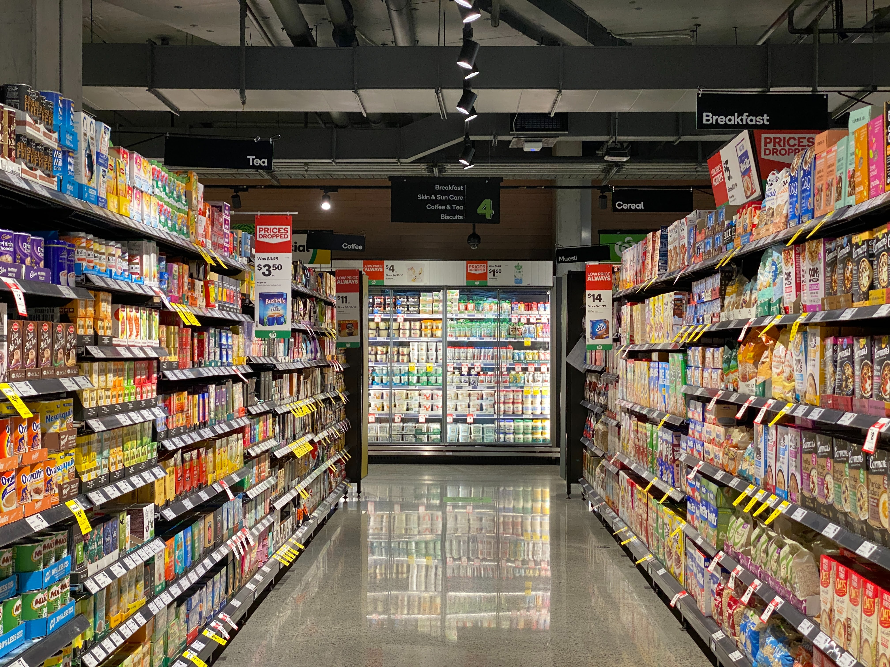
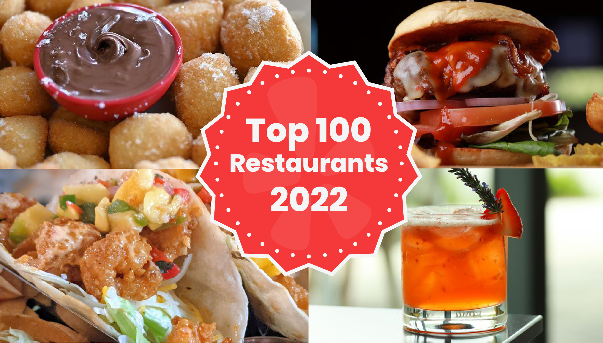

September 2023
In this project, a food aggregation company has stored data regarding orders made by registered customers on its online
platform.
The goal is to examine this data closely to extract valuable insights into the demand trends of different
restaurants, ultimately
enhancing the overall customer experience. To achieve this, a thorough data cleaning process and
Exploratory Data Analysis (EDA) were
undertaken, involving statistical analyses like univariate, bivariate, and multivariate analyses. The findings from these analyses were
subsequently utilized to generate insights and
offer potential recommendations for the food aggregation company.
In this project, a bank wants to expand its credit card customer base by targeting new customers and upselling to existing customers.
To do so, they want to identify different segments of customers that exist in data, using an Unsupervised Learning Techniques.
A clustering analysis was performed to categorize players according to their varying potentials, considering
their performances in the previous season. This analysis aims to unveil patterns in player performances and fantasy returns, aiding in the
determination of precise pricing for each player in the upcoming football season.
The project's objective is to develop a predictive model using machine learning regression models. This model is designed to predict the sales
of each product in a given store. The ultimate goal is to offer actionable recommendations to the BigMart sales team, enabling them to comprehend
the product and store attributes that significantly influence increased sales.
The goal is to conduct a comprehensive exploration and visualization of the dataset, establish a model for predicting used car prices, and
formulate a set of insights and recommendations for the business. For instance, armed with knowledge of the market price, the business can
ensure that it never sells any item below this benchmark.

This predictive analysis is intended to facilitate strategic sales operations in different tier cities and optimize inventory planning.
To fulfill this objective, a linear regression model was developed to predict the total sales of the stores for specific quarters in the year.

The dataset includes demographic, education, and experience details collected during
candidate signup. The goal is to build a predictive model leveraging Deep Learning to estimate the probability of a candidate looking for a new job, optimizing
HR processes and course planning based on factors influencing employment decisions.
The admission dataset is designed for predicting acceptance into the University of California, Los Angeles (UCLA), assisting students in
university selection. Utilizing neural networks, a classification model was constructed to predict a student's likelihood of admission,
providing valuable insights for applicants to gauge their chances of acceptance.
The objective is to analyze and develop a machine learning model that identifies leads likely to convert to
paid customers. The model will discern key factors influencing the conversion process and create a profile for leads with high
conversion potential, ultimately optimizing resource allocation for the startup's programs.
The goal is to develop a predictive model for estimating the duration of bus rides in New York City. Utilizing automated feature engineering,
new features were generated to enhance the model's predictive capabilities. This approach aims to leverage advanced techniques to derive
insightful features that can contribute to more accurate and efficient predictions of bus ride durations.

E-commerce giants like Amazon and Flipkart utilize Book Recommendation Systems to suggest books based on individual preferences, enhancing
shopping experiences and boosting sales. This case study focuses on building three recommendation systems, including Knowledge/Rank-Based,
Similarity-Based Collaborative Filtering, and Matrix Factorization-Based Collaborative Filtering. These systems aim to provide logical book
recommendations, optimizing shopping value and reducing user shopping time.

The project focuses on building four recommendation systems: Knowledge/Rank-Based, Similarity-Based Collaborative Filtering, Matrix
Factorization-Based Collaborative Filtering, and a Clustering-Based Recommendation System. Yelp's automated software recommends reliable
reviews to assist users in decision-making.

INN Hotels Group grapples with a surge in cancellations, reaching an 18% peak inventory loss and an annual revenue loss of $0.25 million.
Current heuristic mechanisms prove inefficient and non-scalable, prompting the group to seek a Data Science-based solution for predicting
booking cancellations. The aim is to proactively minimize revenue loss and improve operational efficiency, recognizing the inadequacy of
their existing methods.